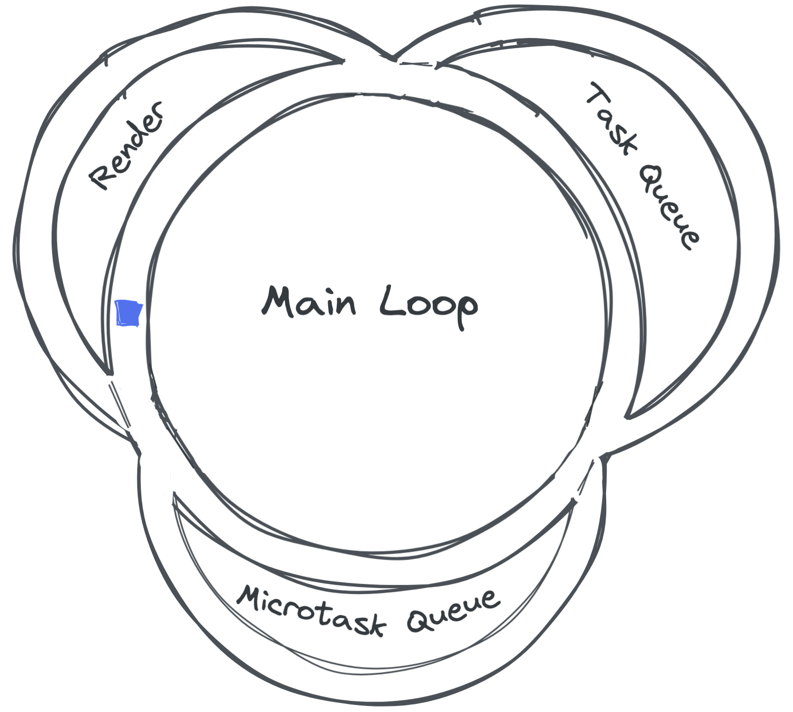

Asynchronous Javascript
Client/Server Communication
...and other long running tasks.
Promises
- The Promise object represents the eventual completion (or failure) of an asynchronous operation, and its resulting value.
- Promises allow us to write callbacks in a linear or serial manner and avoid "Callback Hell"
- It returns a temporary proxy value for something not known when the promise is created.
- It allows you to associate handlers with an asynchronous action's eventual success value or failure reason.
There are four states in which the promises can be:
- ⏳ Pending: initial state. Async operation is still in process.
- ✅ Fulfilled: the operation was successful. It invokes .then callback. E.g., .then(onSuccess).
- ⛔️ Rejected: the operation failed. It invokes the .catch or .then ‘s second argument (if any). E.g., .catch(onError) or .then(..., onError)
- üòµ Settled: it‚Äôs the promise final state. The promise is dead. Nothing else can be resolved or rejected anymore. The .finally method is invoked.
Process Diagram

Promises Provide a Placeholder for a Future Value
function futureValue(value, time) {
return new Promise(function(resolve, reject) {
setTimeout(() => {
console.log(`done after ${time/1000} seconds`)
return typeof value === 'string' ?
resolve(value) :
reject('error: must be a string')
}, time)
})
}
let test = futureValue('test', 5000)
let test1 = futureValue(5, 5000)Callback Hell is a terrible place


What's a Callback Again?
- Any function that is executed at some indeterminate time after initial page render (Window Mounting).
- Usually callbacks are passed as a parameter in another function that is invoked by some user triggered Event
// Not always user generated, though
// just displaced in time from initial Mount
let callback = val => console.log(val)
setTimeout(callback('finally'), Math.random()*10_000)
document.addEventListener('click', callback)Callback Hell to Promises using .then()
a(() => {
b(() => {
c(() => {
d(() => {
// and so on ...
});
});
});
});Promise.resolve()
.then(d => console.log(d))
.catch(console.error);Handling resolve & reject with then & catch
let futureValue = (value) => new Promise((resolve, reject) => {
setTimeout(() => {
console.log(`done after 3 seconds`)
return typeof value === 'string' ?
resolve(value) :
reject('error: must be a string')
}, 3000)
})
let test = futureValue('test')
.then(response => console.log(response))
let test1 = futureValue(5)
.then(response => console.log(response))
.catch(err => console.log(err))
//notice console.error isn't invoked when we use .catchPromises Spinner Code Along
Toggling a Spinner with Promises
The Event Loop
Or how JS does Async
Async/Sync
Another mind-bender ü§Ø
Take your time. Read & watch a lot about it.
Promises Review Intro ArticleSynchronous vs Asynchronous
console.log('First')
console.log('Second')
console.log('Third')Promise.resolve('First?').then(d => console.log(d))
console.log('Second')
console.log('Third')Why Structure it this way?
- Event-based Nature of user input
- Procedural vs. Declarative
let tweets = loadDataSync(data);
// ... Wait
// ... Do something with the data
data.filter(() => ...) // setTimeout(data.filter(...))
doSomeOtherThings();loadDataAsync(function (data) {
// ... All ready to use the data whenever it arrives
data.filter(() => ...)
});
doSomeOtherThings();Event Loop Video
Event Loop
Tasks, task queue, the main thread, checkpoints
ES6: The new Microtask Queue MDN, js.info
Promises vs. setTimeout & long-running loops
ES6: More Event Loops
Async Aparatus Diagram
Event Loop, Tasks, Queues Spec
Loupe Visualizer
Blocking or non Blocking?
function futureValue(x = 'test', iter = 100_000) {
let promise = wait(x, iter)
console.log('log2', promise)
return promise;
}
function wait(value, iterations) {
console.time(value)
return new Promise(function(resolve, reject) {
console.log('log1', this)
if(iterations < 0) return reject('error: failed @ ' + value)
let num
for(let i = 0; i <= iterations; i++) {
for(let j = 0; j <= iterations; j++) {
num = i * j
}
if(i === iterations) {
console.timeEnd(value)
return resolve(value)
}
}
})
}
let test = futureValue()Blocking or non Blocking?
console.log('begin the program');
console.time('i');
noBlocking(500, function (i, end) {
if(end) {
console.log(`0 : ${i}`)
console.timeEnd('i')
}
})
function noBlocking(n, callback){
var i=0
function loop () {
if (i<n) {
i++;
callback(i, false)
window.requestAnimationFrame(loop)
}
else callback(i, true)
}
loop()
}Web Workers MDN
True Multi-threading: A Full Javascript runtime in an isolated thread
Has limitations on what it can access (i.e. No DOM Access)
Supports simple Message Passing between itself and the main thread
Web Workers Aparatus
No checkpoints, only postMessage()
Custom Events MDN
const myEvent = new Event('myevent', {
bubbles: true, // defaults to false
cancelable: true, // e.preventDefault()
composed: false // pierce shadowDOM?
})
const myCustomEvent = new CustomEvent("mycustomevent", {
detail: {
payload: [1,2,3,4] // Pass payload data here
}
});
document.dispatchEvent(myCustomEvent, e => console.log(e.detail))Code Along: Let's Launch a Rocket
üöÄ
Fetch
Our First Peak at Fetch
`fetch` is a Promise that accepts a URL, then makes an HTTP request to that resource and asynchronously returns with a data payload
let request = fetch('https://jsonplaceholder.typicode.com/todos')
// We call .then on it:
request
.then(response => response.json())
.then(data => console.log(data)).json() is a built-in method on `fetch`. It formats JSON data into an object
Async Requests
Depicted as branching actions instead of via the Event Loop
 api
api
Primer on JSON MDN
- Javascript Object Notation (Counterpart to XML format)
- Universal data payload format for the Web
{"menu": {
"id": "file",
"value": "File",
"popup": {
"menuitem": [
{"value": "New", "onclick": "CreateNewDoc()"},
{"value": "Open", "onclick": "OpenDoc()"},
{"value": "Close", "onclick": "CloseDoc()"}
]
}
}}The JSON object
JSON.stringify()
JSON.parse()Not Fetching JSON?
Instead of response.json(), use response.text()
XML libraries
You could even use document.querySelector to traverse XML.
let div = document.createElement('div')
body.appendChild(div)
div.innerHTML = XMLResponse
div.querySelector('xmlTag')Let's have a look in the console at what this does
let f = fetch('https://jsonplaceholder.typicode.com/todos')
// We call .then on it:
f.then(response => {
console.log(response)
return response.json()
})
.then(data => console.log(data))HTTP Status Codes
function request(url = 'https://jsonplaceholder.typicode.com/tods') {
return new Promise((resolve, reject) => {
fetch(url).then((res) => {
if (res.status == 200 && res.ok) {
console.log("Promise resolved")
return resolve(res);
}
console.log("Promise rejected")
reject(res);
}
).catch(error => console.log("promise rejected: " + error))
}
)
}Promise Methods for Multiple Promises MDN
Promise.all()Promise.allSettled()Promise.any()Promise.race()
Legacy XHR Syntax
Polyfills for Internet Explorer
async / await
Another way to write promises
Writing A Curried Fetch Utility
var f = protocol => domain => path => {
return fetch(protocol + domain + path)
.then(r =>r.json())
.then(d=> console.log(d))
}
var prot = f('https://')
var dom = p('jsonplaceholder.typicode.com/')
var todos = dom('todos')
var firstTodo = dom('todos/1')
var users = dom('users')HTTP POST
So far we've seen HTTP GET. Which retrieves data from a server.
Now let's see how to send data to a server/database to be recorded.
Supplying Request Options aka:
config
fetch(url, config)
.then(response => response.json())
.then(confirmation => console.log(confirmation))Example POST
fetch(url, {
method: 'POST',
mode: 'cors',
cache: 'no-cache',
credentials: 'same-origin',
headers: {
'Content-Type': 'application/json'
},
redirect: 'follow',
referrerPolicy: 'no-referrer',
body: JSON.stringify(data)
})
.then(res => console.log(res))The Options Object Request(), Headers()
method: GET, POST, PUT, DELETE, etc.mode: no-cors, cors, same-origincache: default, no-cache, reload, force-cache, only-if-cachedcredentials: include, *same-origin, omitheaders: { 'Content-Type': 'application/json' || 'application/x-www-form-urlencoded' }redirect: manual, follow, errorreferrerPolicy: no-referrer, no-referrer-when-downgrade, origin, origin-when-cross-origin, same-origin, strict-origin, strict-origin-when-cross-origin, unsafe-urlbody: anything that matches format specified inheader['Content-Type']
CORS
Cross Origin Resource Sharing MDN
Blocks requests from other domains unless permission is explicitly allowed on the server. For data protection/privacy purposes.
Server Configuration: Access-Control-Allow-Origin: *; - MDN
new URLSearchParams() & new URL()MDN
Easily parse a url to extract query string components
let url = new URL('https://jsonplaceholder.typicode.com/todos?name=al&id=1')
let searchParams = new URLSearchParams(url.search);
let items = [...searchParams.entries()]
// [["name", "al"], ["id", "1"]]
let otherParams = new URLSearchParams('name=jo&id=2')
let otherItems = [...otherParams.entries()]
// [["name", "jo"], ["id", "2"]]More Code Along
Let's make a news story fetcher!
Code Along with Public APIs
Let's make a User Fetching App
- Add more cross functionality to your app
- Or start a whole new one!
- Set your github settings in your usr-mgr repo to expose it on your portfolio